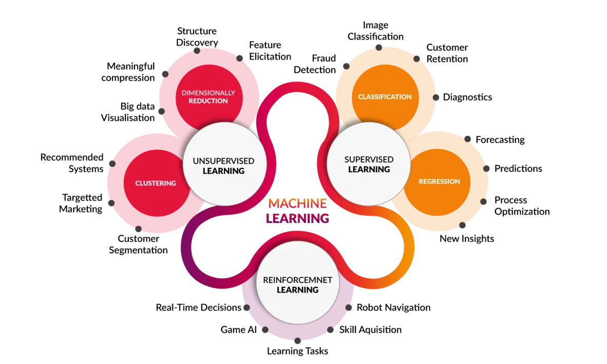

Who I am
I turn complex projects into concrete results.
I am a Project Manager and today I work on artificial intelligence solutions for banks and companies.
Before getting here I went through very different worlds: luxury eyewear, mechanical engineering and IT consulting in the insurance sector.
This lets me understand the problems of different industries and translate them into technology solutions that actually work.
Experience
Sep 2026 – Present
Project Manager · KALAWAY
Innovation / R&D department.
- Planning and monitoring projects in terms of time, cost and objectives with a team of 5
- Monitoring the use and development of AI agents
- Progress reviews with management and key stakeholders
- Feature testing through a stage-gate system
May 2025 – Sep 2026
Project Manager & Scrum Master · Cluster Reply
Padova (hybrid). Several projects for an insurance client specialised in commercial vehicles.
- Single Point of Contact between stakeholders and the project team
- Led a team of 4 in an Agile context, planning and tracking work in Jira
- Azure ecosystem, with exposure to Google Cloud Platform projects
- Developed and supervised document management solutions based on Azure OpenAI, integrated into the client’s processes
- Focus on delivery: quality, timelines and alignment with business goals
Jan 2024 – May 2025
Project Manager · Maschio Gaspardo Group
R&D department: launch, development and monitoring of innovation projects.
- Business opportunity analysis for new projects, preparing documents to support decision making
- Coordinating development activities and inter-departmental and inter-company communication
- Reporting project KPIs and risks to key stakeholders
Nov 2021 – May 2022
Quality Control Supervisor Intern · Luxottica
Agordo (BL), Finishing department.
- Continuous improvement projects, including an automation project with the Automation team
- Non-conformity management and root cause analysis with advanced measuring tools
- Data analysis and automated reporting with Excel and Power BI; data collection connected to SAP
- Built a Power Apps process-audit app later adopted by another Italian plant
- Statistical sampling plans based on sample size, defect rate and AQL
Apr 2021 – Sep 2021
Process Engineer Intern · Speedline S.r.l.
- Production monitoring to ensure maximum productivity with high quality
- Resource coordination and continuous process improvement aimed at cost savings
Education
2019 – 2021
MSc in Engineering and Management · Politecnico di Torino
Grade 106/110. Thesis: “FMEA analysis of a robotic system to increase its availability”.
2016 – 2019
BSc in Industrial Engineering and Management · Università di Padova
Grade 96/110. Thesis: “Buffer sizing to increase the efficiency of a production line”.
Skills
- Project Management
- Scrum
- Agile Project Management
- Agile Leadership
- Project Planning
- Project Portfolio Management
- Jira
- Microsoft Project
- Microsoft Azure
- Azure OpenAI
- Machine Learning
- Python
- Power BI
- Power Apps
- Excel VBA
- Lean Manufacturing
- Quality Management
- Strategic Planning
- Communication
Beyond work
I spent a year abroad between Australia, Asia and Japan. I speak three languages, I have worked in multicultural teams and I love photography.
Travelling taught me to listen to different perspectives, and I bring that into every project.
I believe in continuous learning and that AI will change the way we work.

Microsoft ML for Beginners: regression, classification, clustering, NLP and time series forecasting models in Python.
Harvard CS50 AI with Python: search, knowledge, uncertainty, optimization, machine learning and neural networks.